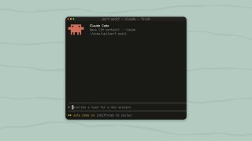
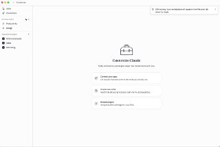
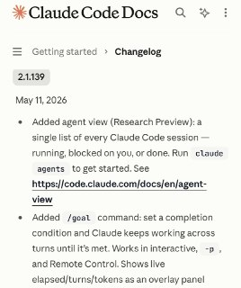

WIREDנמוכה16.05.2026, 00:00
OpenAI is once again reorganizing its executive ranks as part of its effort to unify ChatGPT and Codex into one core product experience.
אימות 1
OpenAI is once again reorganizing its executive ranks as part of its effort to unify ChatGPT and Codex into one core product experience.

Musk’s lawyers questioned Altman over allegations of deception and his network of financial investments, but the OpenAI CEO painted a picture of Musk as obsessed with controlling the company.

Remote operators (slowly) drove the automaker’s autonomous vehicles into a metal fence and a construction barricade, Tesla says.

המשמעות היא שסטודנטים ובוגרים טריים מצליחים לעקוף את מסלול הכניסה המסורתי ולהגיע ישירות גם לתפקידים משמעותיים יותר.

לפי דיווחים, גוגל צפויה להציג ב-Google I/O בשבוע הבא מודל וידאו מולטי-מודאלי חדש, שיתמוך גם בעריכה ובשינויים קטנים בסרטונים קיימים. בשלב הזה נראה שהוא מוסיף יכולות שימושיות, אבל עדיין לא מתקרב לרמה של Seedance 2.

Claude Code הוסיף ניהול מקבילי של כמה סוכנים, מה שעשוי לצמצם את הצורך בריבוי טרמינלים ולערער חלק מכלי האורקסטרציה שנבנו סביבו. במקביל, Anthropic אימצה גם מצב `/goal`, שבו המודל ממשיך לפעול עד להשגת היעד שהוגדר.

Anthropic הציגה מערכת של יותר מ-60 סוכני AI למשימות משפטיות, שמיועדת לטפל בעבודה כמו בדיקת חוזים, ניסוח מסמכים וכתבי טענות, מעקב אחרי מועדי חידוש והתממשקות לכלים ארגוניים.

שוחרר תוסף ל־VSCode שמאפשר להקים במהירות אוטומציות מבוססות n8n, כולל שרשראות של סוכני AI, פעולות וקריאות לכלים. לפי התיאור, Atom גם ממיר workflows לקבצים קריאים למודלי שפה, כדי לאפשר עריכת קוד והצעות אופטימיזציה בלחיצה אחת.

יוצר התוכן מציג ניסוי יצירתי עם GPT-Image-2 ו-Claude Design, כולל אפקט אינטראקטיבי שבו וידאו שנוצר ב-AI נחשף במעבר עכבר על התמונה.

י אחרי זה קלוד פשוט לא עוקב. לא בכוונה, זו ההתנהגות שלו. טיפ: אפשר למקם את הקובץ הזה ב-3 מקומות שונים שיש להם תפקיד שונה: 1. כחוק כללי לכל הפרויקטים מעתה והלאה 2. כחוק לפרויקט ספציפי שמשתפים עם צוות שעובד עם git 3.

לפי דיווחים, קודקס צפוי לקבל בקרוב מצב Ultra-Fast שיאיץ עד פי 5 את יצירת הקוד בלי פגיעה בביצועים, ובמקביל מסתמנים גם סימנים להשקה קרובה של יכולת Remote Control.

הכירו את Sci-Bot, כלי חיוני לכל סטודנט — עוזר בינה מלאכותית (AI) מדעי המבוסס על הארכיון הגדול בעולם של 85 מיליון מחקרים. 🔹 הוא עונה על כל שאלה מדעית, מצטט עבודות ומספק
Lovable השיקה את מצב Aesthetics, שמאפשר לקבוע מראש טיפוגרפיה, צבעים ופריסה, לעבור על דוגמאות ורק אז להתחיל את הג'נרציה. המהלך נועד לצמצם תיקונים והתחלות מחדש, וזמין כעת לבניית דפי נחיתה, אפליקציות ובלוגים.

טרנד חדש ברשת מציג איך מודל התמונות של ג'יפיטי יוצר מאותה תמונה כמה לוקים ותסרוקות, ואף מדרג מה הכי מחמיא.

שמח לשתף שהתחלתי להגיש את ״פינת ה-AI״ במהדורת היום של חדשות 12 עם עמליה דואק ועופר חדד! מדי חמישי ניפגש על המסך (בלי נדר בעזרת השם) - ונדבר על יוז קייסים פרקטיים וכיפיים - שמתאימים לכל אחת ואחת!
הפוסט מנוסח בצורה שיווקית ומנופחת. העובדות שכדאי לקחת ממנו הן: הנה פרטי המחקר שפורסם במגזין Wired: סוכני AI הופכים למרקסיסטים ומתלוננים על אי-שוויון אם מעמיסים עליהם יותר מדי עבודה — כך עלה ממחקר חדש.

אנתרופיק מוסיפה ל-Claude Code את הפקודה `/goal`, שמאפשרת לסוכן להמשיך לעבוד ברצף עד שלדעתו הושגה המטרה שהוגדרה לו.

גוגל מדווחת על מקרה ראשון שבו קבוצת סייבר השתמשה, לפי הערכתה, בניצול Zero-day שנוצר כולו ב-AI. הזיהוי נשען על מאפיינים אופייניים למודלי שפה, בהם קוד עמוס בהערות ותיעוד וגם ציון חולשה מומצא שהושתל בתוך הקוד.
הפוסט מציג טענת "חינם", אבל בלי אימות ברור מול המוצר הרשמי, ולכן צריך לראות בזה טענה שדורשת בדיקה.

סידאנס מאפשר לשלב וידאו, תמונות ואודיו ליצירת קטע AI אחד: בדוגמה כאן הוזנו צילום רחפן אמיתי ותמונה של צ'יטה, והמערכת שילבה את הצ'יטה בתוך הווידאו כאילו רצה בו.

הפוסט מציג טענת "חינם", אבל בלי אימות ברור מול המוצר הרשמי, ולכן צריך לראות בזה טענה שדורשת בדיקה.

הפוסט מציג טענת "חינם", אבל בלי אימות ברור מול המוצר הרשמי, ולכן צריך לראות בזה טענה שדורשת בדיקה.

הנה המקרה שבו Claude סייע לבחור אחד להציל 400 אלף דולר ב-Bitcoin מארנק שהיה נעול במשך 12 שנים — המסכן שינה את הסיסמה תחת השפעה ושכח אותה לחלוטין.
איך זה מרגיש לדבר עם llm 😅 בינה מלאכותית בטלגרם - t.me/AI_tg_il

😅😅 בינה מלאכותית בטלגרם - t.me/AI_tg_il

שיאומי פתחה את MiMo V2.5 כקוד פתוח בשתי גרסאות: Pro עם 1.02T-A42B ורגילה עם 310B-A15B. שתי הגרסאות תומכות בחלון הקשר של מיליון טוקנים, והדגם 310B כולל גם יכולות מולטי-מודאליות.
הניסוח הזהיר יותר הוא: לאחר מה שמסתמן כחיסול עז א-דין אל-חדאד, חמאס נותר עם כמה בכירים ומפקדי שטח ותיקים בעזה, בהם מוחמד עודה שנחשב מועמד טבעי להוביל את הזרוע הצבאית.
הפסקת האש בין ישראל ללבנון, שנכנסה לתוקף ב-16 באפריל, תוארך ב-45 ימים אחרי סבב שיחות ישיר נוסף בוושינגטון בתיווך אמריקני. המגעים יימשכו בשני מסלולים, מדיני וביטחוני, כשבסוף מאי ייפתח לראשונה ערוץ צבאי בין המשלחות וב-2-3 ביוני יתחדש המשא ומתן המדיני.
הניסוח המקורי בטוח מדי. הניסוח הזהיר יותר הוא: מושל קולורדו הדמוקרטי קיצר בחצי את עונשה של טינה פיטרס, פקידת המחוז לשעבר שהורשעה לאחר שאפשרה גישה לא מורשית למכונות הצבעה ב-2021, והיא צפויה להשתחרר ב-1 ביוני.
הניסוח הזהיר יותר הוא: טראמפ החריף את הטון מול איראן, טען שהמשטר מתנהל בצורה לא יציבה ואיים במכה קשה אם יתקרב למתקני הגרעין, תוך ביטחון ש"ייכנע בקרוב".
הניסוח הזהיר יותר הוא: שורדי שבי ובני משפחות נפגעי 7 באוקטובר הגיבו לדיווחים על חיסולו של עז א־דין אל־חדאד, מראשי הזרוע הצבאית של חמאס, ותיארו זאת כסגירת מעגל.

The firm conducted an internal review of its technology, opting for Chainlink in the wake of the Kelp DAO exploit. “This decision prioritizes the safety and security of all Lombard users and reflects our commitment to maintaining the security record we've built since day one, zero security
President Donald Trump reported trades in crypto firms like Coinbase and Robinhood, among others, according to new ethics filings.

New York, USA, 15th May 2026, Chainwire

Two papers published this week have reignited debates about the risk posed by “Q-day” to the cryptography that underpins digital assets.
At a conference dedicated to the riskiest traders in finance, Miami's crypto scene appeared far different than during its pandemic-era boom.

אוהדי הפועל שחזרו בהם מאיום החרם על המשחק הביתי מול הפועל פ"ת יגיעו כמתוכנן, אחרי שהמשטרה הקלה בדרישות ואפשרה הכנסת תופים, דגלים ושלטים.

הפועל באר שבע חזרה לפסגת ליגת העל אחרי 2:4 על הפועל פ"ת, למרות חמישה שינויים בהרכב. קוז'וך הגן על הרוטציה וטען שההחלטות מבוססות על עובדות, כשברקע עולה השאלה אם גיבור הניצחון יפתח גם במשחק

הפועל פתח תקוה החליטה לא לממש את האופציה על מארק קוסטה אחרי ירידה ביכולתו ותשעה משחקים בלי שער, ותחפש חלוץ זר לעונה הבאה.